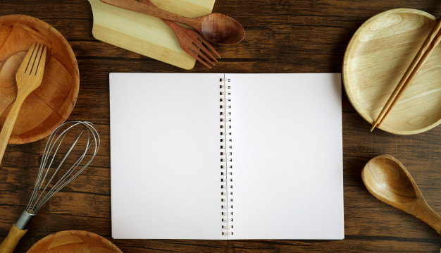

Mercredi
Ce mercredi, on vous propose desoeufs à la coque accompagner d'une salade, des tartitnes en gouter et pour finir une bonne galette bretonne. Si avez ça vous ne vous régaler pas! A savoir il faudra garde le pain et la salade du midi et oui on fait de la récupe même en cuisine!
Plat: Oeuf à la coque mouillette et salade

Ingrédient
- 1 oeuf
- 1/3 de baguette
- Beurre
- Salade verte
- Tomates
- Huile d'olive
- Sel
- Poivre
| Nombre de persone : |
| 1 |
| Temps de préparation : |
| 10 minutes |
Oeufs à la coque
- Préchauffer l'eau dans une casserole et attendre l'ébulition
- En attendant, couper votre morceau de pain en lamelle et beurrer le.
- Laver et couper votre salade, garder la moitié au frais pour ce soir
- Couper les tomates en petits morceaux
- Mettez votre oeuf dans l'eau bouillante 3 minutes top chrono!.
- Salez poivrez et assaisonez d'huile votre salade
- Votre oeuf et cuit! il suffit de couper le chapeau de l'oeuf et déguster en trempant vos mouillette dedans
Gouter: tartine façon pain perdu
Ingrédient
- 1/2 baguette de pain
- Beurre
- Pate à tartiner
- Confituree
- Sucre
- Lait
- 1 Oeuf
| Nombre de persone : |
| 4 tartines |
| Temps de préparation : |
| 10 minutes |